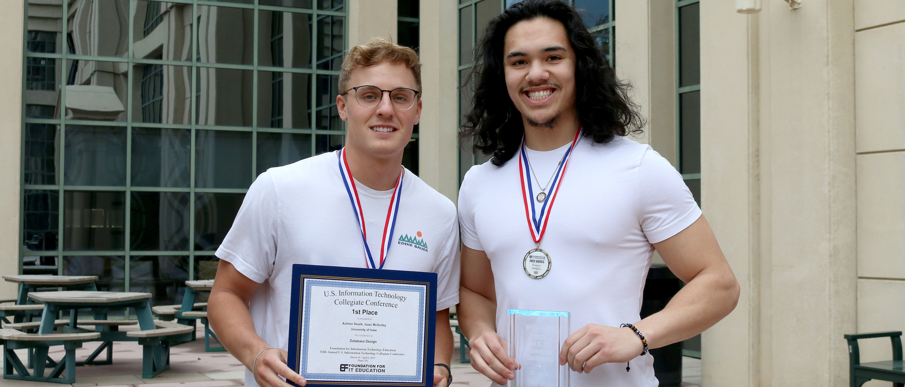
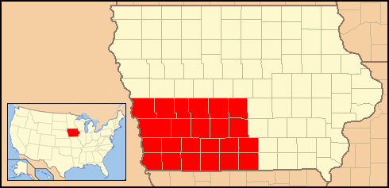
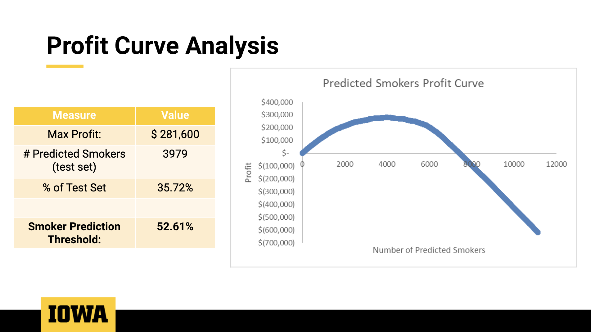

I am currently a Data Analytics Developer with expertise in data analysis, data visualization, and business intelligence. I hold a M.S. in Business Analytics and a B.A. in Informatics with an economics concentration. My speciality is working with biopharmaceutical data.
EXPERIENCE
Kru-Marc Inc.
Data Analytics Developer (2025 - Present)
I currently serve as an outsourced Business Intelligence Consultant and Data Analytics Developer for
AbbVie, where I build and support Power BI CURO dashboards and develop automated paginated reports connected to Power BI semantic models across the following franchises and tools:
- Conventions Dashboard - Lead Developer/Manager
- Parkinsons - Lead Developer for the Automated Input Output Paginated Report
- Samples Dashboard - Lead Developer
- CURO Puerto Rico Market Access - Lead Developer
- Call Plan Execution Tool - Lead Developer
- MHI Campaign Management - Co-Developer
- CURO Immunology - Support: CURO Rheum/Derm, CURO Gastro, CURO IAE, CURO GAM, CURO AD
- Neuro/EyeCare - Support: CURO Migraine, CURO Psych, and CURO EyeCare. Migraine Automated Paginated Reports - Lead Developer: Growers & Decliners, All-Time High, HIP Bucket, Customer Groups, Input Output, Reach & Frequency
- CURO FRM Dashboard - Support/Consultant
Des Moines Diocese
Student Data Analyst (2023 - 2024)
While working as a Student Data Analyst for the Des Moines Diocese, I applied machine learning to forecast demographic trends and built dashboards in Tableau to aid in resource allocation. My work helped school and church leaders across southwest Iowa make strategic decisions backed by data, enabling them to visualize demographic shifts and optimize the distribution of resources more effectively.
University of Iowa – Tippie College of Business
Economics Teaching Assistant (2023 - 2024)
As a Teaching Assistant for Principles of Microeconomics, I guided over 90 students across three sections through challenging economic theory and real-world applications. I used interactive simulations and relatable examples to deepen their understanding of concepts like supply and demand, market equilibrium, and externalities. My focus was on ensuring students didn’t just memorize models—but truly grasped how they apply outside the classroom.
Origami Risk
Business Systems Analyst Intern – CORE Team (Summer 2023)
During my internship on the Core Team at Origami Risk, I collaborated with technical consultants and solution architects to support client system configuration and optimization. I handled SQL-based troubleshooting and gained exposure to XML, HTML, and JavaScript while delivering system enhancements and helping streamline customer workflows. It was a hands-on, fast-paced environment that sharpened both my technical and client-facing skills.
University of Iowa – Tippie Department of Business Analytics
Database Management Assistant (2022 - 2023)
In this role, I supported a database design course by grading SQL assignments, guiding students on best practices in normalization, indexing, and schema development. I hosted office hours each week to walk students through writing complex queries and improving their understanding of relational database concepts. It strengthened my technical SQL knowledge and my ability to teach complex topics clearly.
Skills Used: Predictive Analytics, Data Mining, Machine Learning,

In this business analytics modeling challenge, I worked with a partner to tackle a real-world dataset using predictive modeling techniques. The competition required a solid grasp of data transformation, machine learning, and statistical analysis, alongside a working knowledge of accounting, economics, finance, SQL, and management principles. We were free to use any software or internet resource to develop our model. Our submission was evaluated across multiple dimensions, including model accuracy (30%), justification of our approach (20%), explanation of the method (20%), and the use of both inferential (20%) and descriptive statistics (10%) to support our findings.
Skills Used: Predictive Analytics, Data Mining, Machine Learning,
In the Database Design Competition, we were presented with a real-world business scenario and tasked with creating a complete Entity-Relationship (ER) diagram from the ground up. This involved defining entities, attributes, and relationships that accurately modeled the business case. Once our schema was finalized, we ran a series of increasingly complex SQL queries to solve operational and strategic problems for the simulated business. The competition was a hands-on test of both our theoretical understanding of relational databases and our practical ability to write efficient SQL queries. It significantly strengthened my skills in data modeling and query logic under pressure.
Skills Used: Excel, Tableau, Data Analysis, Client Communication

While working as a Student Data Analyst for the Des Moines Diocese, I developed interactive Tableau dashboards while utilizing Excel to help school and parish leaders visualize and compare key demographic and financial data across the southwest Iowa region. My work supported resource allocation decisions and strategic planning, making complex data more accessible for non-technical stakeholders.
Skills Used: Orange, Statistical Analysis, Machine Learning, Modeling, Excel

In one of my graduate school projects, I worked on predicting whether an individual was a smoker using health-related variables like age, blood pressure, and cholesterol levels using Orange. The project went beyond just building a machine learning model—we focused on how these predictions could directly support insurance companies in managing risk and pricing policies more effectively. I used Python to build the model, which achieved an accuracy of around 81%. To take it a step further, I performed a profit curve analysis that demonstrated how adjusting the risk threshold could impact overall revenue. This project was a great example of how data science can inform real business strategy, and it reinforced my interest in roles that combine analytics, technology, and high-level decision-making.
Skills Used: Python (pandas, lotly, widgets, and matplotlib libraries), Statistical Analysis, Machine Learning, Modeling, Excel
Our analysis of Airbnb data in the Chicago area allowed us to find the best neighborhood in Chicago to begin renting out an Airbnb. We considered variables such as median house price, median airbnb price per night, amount of days it would take to pay off your house (payback period), as well as saftey score for each neighborhood. For our data, we used a website called apify web scraper to scrape the airbnb website for all listings in and around the city of Chicago. We then wrote this to a csv to use throughout the project. We also used a dataset that provided us with a saftey score and median house price for each neighborhod